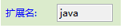

项目：一个大类可以归为一个项目，项目下可以有多个目录。
项目：一个大类可以归为一个项目，项目下可以有多个目录。 新建：文件不存在时，新建文件并根据模板生成新内容。
新建：文件不存在时，新建文件并根据模板生成新内容。- 合并：文件已经存在，根据模板合并指定的部分，其它内容不变。
- 覆盖：文件已经存在，重新执行并覆盖所有内容。
在任务列表中，我们可以管理任务，并选择要执行的任务运行。
任务包括三层结构
项目：一个大类可以归为一个项目，项目下可以有多个目录。 新建：文件不存在时，新建文件并根据模板生成新内容。例如：下面是一个Web项目的任务结构
右键菜单或者右侧按钮可以看到操作。
（项目/目录/任务）名称自定义，不影响生成，但是同级别的不能重名。
我们可以在任务中修改对应的模型，但是如果多个任务都需要修改模型时，效率就会很低。
使用批量的方式设置模型，选中多个任务
选择新的模型组或者模型
选择模型组。

选择模型。
任务有以下3种提示状态， 这些状态会根据环境的变化而自动更新，比如模板有语法错误，文件目录找不到等。
如模板中有语法错误，或者找不到文件等其他错误警告，对应的任务状态也会改变

任务的状态虽然会自动更新，但有时候会有延迟，可以使用刷新手动刷新状态。
任务的执行顺序是由上到下，可以通过向上向下来更换任务的执行顺序。

任务可以复制，粘贴到需要的位置。
可以删除任何元素，项目和目录被删除将同时删除它的子元素。
需要移动鼠标拖拽，任务会从一个位置移动到另一个位置，等同于剪切。

模型来源为当前文件的模型列表
一个任务只能选择一个模型组或者模型，它们之间的使用是有区别的，请阅读：entity应用

 可以打开Action文件。关于Action的用法请阅读：Action
可以打开Action文件。关于Action的用法请阅读：ActionAction必须选择父类是org.jmr.core.JmrActionSupport的类，对话框会自动匹配这些类，输入**会列出所有符合条件的类。选择的Action必须在同一个项目中（jmr文件所在项目）。
可以打开模板文件。模板选择对话框，会列出当前项目下的所有模板，可以在搜索框中输入名称过滤。选择的模板必须是当前项目的（jmr文件所在项目）。
第一次运行任务的状态是新建，接下来都是以合并和覆盖为主。
例如，spring、struts这2个任务都是往配置文件中添加注册信息，menu是在左侧栏目的界面中添加新的链接，所以它们的模式都是合并，其余的都是覆盖。
点击创建新目录，位置可以在打开的任何项目中。
点击 可以使用表达式自定义目录结构。通过选择目录，得到目录的值，再插入模型变量，可以通过模型变量来生成目录。在新建模式下，如果目录不存在，会自动创建。
可以使用表达式自定义目录结构。通过选择目录，得到目录的值，再插入模型变量，可以通过模型变量来生成目录。在新建模式下，如果目录不存在，会自动创建。
表达式有2种写法：
当选中的是模型，可以使用${属性}，此时${属性}指向被选中的模型，也可以使用${relation.属性}。
当选中的是模型组，只能使用${relation.属性}。
例子：使用表达式生成目录。
模型组中，relation为one的模型有属性class，值为book。


如果模型选的是模型，那么使用${class}，也可以使用${one.class}
目录设置如下：
如果模型选的是模型组，只能使用${one.class}
目录设置如下：
生成的文件目录

和目录一样，也可以使用表达式${属性}和${relation.属性}

生成的文件名

